在某一天我突发奇想想要好好重新学习一遍数据结构，然后发现自己一直使用的印象笔记居然无法美观地显示代码，鸡肋的代码块功能加无法显示行号，简直让人崩溃，然后我就去到某乎寻求程序员记笔记的正确方法，看到了许多大神们提议自己搭个人博客，我觉得这玩意太难，再加上我刚入门前端，技术很菜，因此依然在寻求现成软件的道路上越走越远，知道自己试用了很多很多东西还是不满意后，心一横决定还是自己弄博客吧，就算花一周时间也值了！
事实上，关键还是方法要找对，在网上翻了许多教程，将目光定格于了某位大神的一篇简明教程,然后遵照大神的教程，我在一个下午的时间就完成了博客的基本搭建，所以说整个过程对于即使是小白的人来说依然可以很容易地顺利完成。
一、Github Pages和Hexo简介
Github Pages是Github提供给用户用来展示个人或者项目主页的静态网页系统。每个用户都可以使用自己的github项目创建，上传静态页面的html文件，github会帮你自动更新你的页面。
hexo是一个用来生成静态界面的框架，使用hexo，你就可以直接使用markdown 来写文章，而不用关心前端样式的展现。
而我们使用Hexo+Github Pages搭建博客，既可以绑定自己的域名，还可以使用Github Pages可以提供的一个免费的服务器，免去了自己搭建服务器和写数据库的麻烦。
二、安装Node.js
由于本人基于Windows系统搭建，因此接下来的描述都是Windows系统下的过程。
首先在Windows下安装Node.js，这个过程十分简单，到官网下载相应的版本，然后运行exe文件，一直下一步就行，环境变量也会自动配置（建议就选择默认路径，反正也不会占据太大空间）。
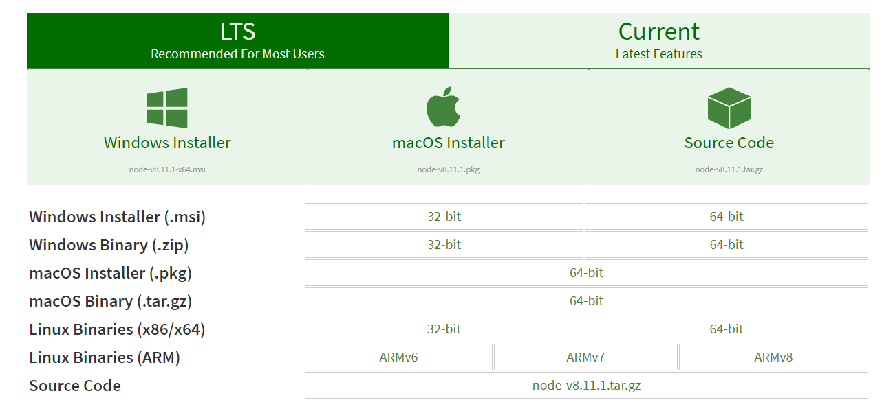
三、安装Git
安装Git的方法也十分简单，去官网下载对用自己操作系统的版本然后执行exe文件，这里有一篇比较详细的安装教程（建议选择默认路径,并选择设置环境变量），建议安装完成后重启一次电脑。
安装完成后在桌面按住shift的同时按住鼠标右键，打开命令提示符，输入git version，如果成功输出版本号信息，则安装成功，同时可以看到画面中出现的Git GUI Here和Git Bash Here的按钮。

这里有一份教程，有时间打算深入了解下Git：Git Pro
四、安装Hexo
在桌面点击鼠标右键，选择Git Bash Here，输入npm命令安装Hexo。
npm install hexo-cli -g
npm install hexo-deployer-git --save第一句是安装hexo，第二句是安装hexo部署到git page的deployer，两个都需要安装。
注意： 如果出现npm命令无效，则进入到C:\Program Files\nodejs即node.js的安装目录下右键打开Git Bash Here，这个问题出现的原因是环境变量配置不正确，或者之前没有重启主机。
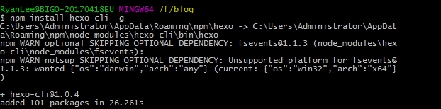
五、Hexo配置
首先到某个自己喜欢的目录下创建Hexo文件夹，比如我在D:\路径下新建了文件夹并命名为Hexo。
然后我们进入到此新建文件夹，右键鼠标，打开Git Bash Here（以下简称Git），执行语句：
hexo init上述操作可能需要等待半分钟才能完成，完成后，我们就可以看到Hexo文件夹下生成了如下的文件。
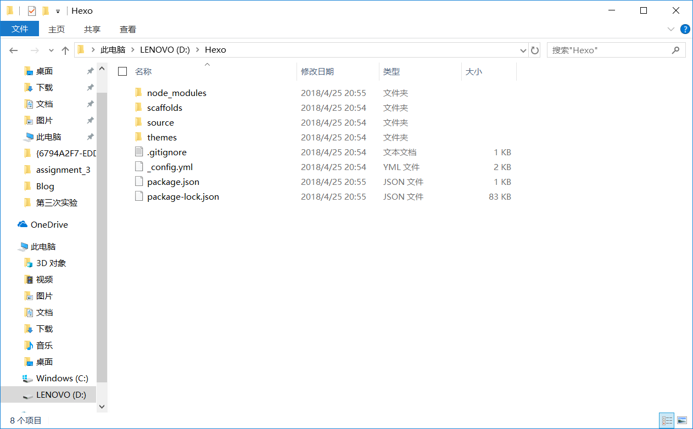
为了确认我们的Hexo已经初始化成功，我们在Git里执行:
hexo generate
hexo server注意： 执行hexo g命令可以代替hexo generate，hexo s可以代替hexo server。
等待一会，执行完成后，我们打开浏览器输入localhost:4000，如果出现如下页面，则说明初始化已经成功。
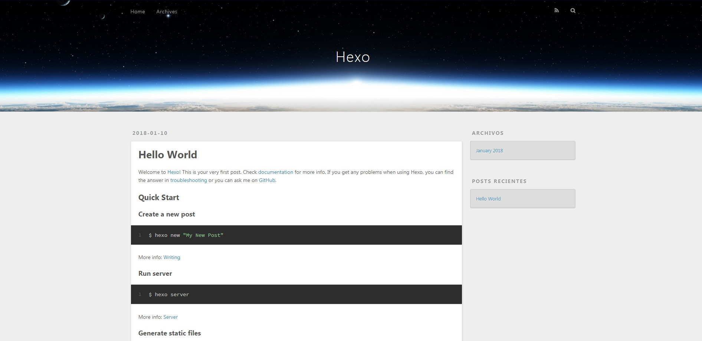
五、将Hexo生成博客部署到Github Pages
上面的步骤完成后我们的本地博客就已经成功搭建了，但是也只能在本地访问，而我们想要在互联网上看到自己的博客就必须将它发布到服务器上，Github Pages就是帮我们完成这件事的，因此我们只需要做好初始工作。
5.1 注册Github账号
- 进入Github首页
- 点击右上角Sign in，注册账号
5.2 创建项目代码库
注册完成后，我们要创建Github Pages的代码库，点击New repository，按照下面注意事项进行创建。
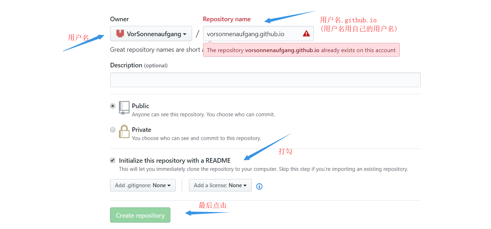
5.3 配置SSH密钥
配置Github的SSH密钥可以让本地git项目与远程的github建立联系，让我们在本地写了代码之后直接通过git操作就可以实现本地代码库与Github代码库同步。
第一步：看看是否存在SSH密钥(keys)
首先，我们需要看看是否看看本机是否存在SSH keys,打开Git,运行:
cd ~/. ssh 如果不存在此目录，则进行第二步操作，如果存在，可以略过第二步，直接进入第三步操作。
第二步：创建一对新的SSH密钥(keys)
$ssh-keygen -t rsa -C "your_email@example.com"
#这将按照你提供的邮箱地址，创建一对密钥
Generating public/private rsa key pair.
Enter file in which to save the key (/c/Users/you/.ssh/id_rsa): [Press enter]直接回车，则将密钥按默认文件进行存储。
接着，根据提示，你需要输入密码和确认密码（说到这里，如果你很放心，其实可以不用密码，就是到输密码的地方，都直接回车，所以每次push就只管回车就行了 ）。相关提示如下：
Enter passphrase (empty for no passphrase): [Type a passphrase]
Enter same passphrase again: [Type passphrase again]输入完成之后，屏幕会显示你的SSH信息。
第三步：在GitHub账户中添加公钥
运行如下命令，将公钥的内容复制到系统粘贴板(clipboard)中。
clip < ~/.ssh/id_rsa.pub接着回到Github页面，选择用户Setting
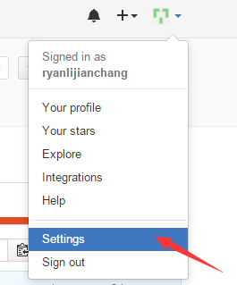
选择SSH Keys
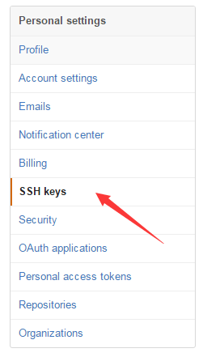
粘贴密钥，添加
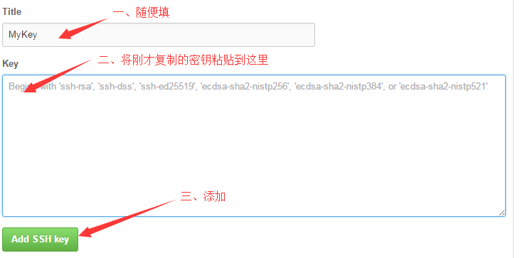
第四步：测试结果
打开Git，输入命令：
ssh -T git@github.com如果出现：
The authenticity of host 'github.com (207.97.227.239)' can't be established.
RSA key fingerprint is 16:27:ac:a5:76:28:2d:36:63:1b:56:4d:eb:df:a6:48.
Are you sure you want to continue connecting (yes/no)?输入yes，然后会出现：
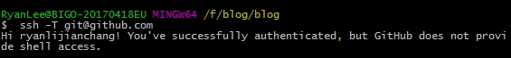
第五步：设置用户信息
现在已经可以通过SSH链接到GitHub了，但是还有一些个人信息需要完善的。 Git会根据用户的名字和邮箱来记录提交。GitHub也是用这些信息来做权限的处理，输入下面的代码进行个人信息的设置，把名称和邮箱替换成你自己的，名字根据自己的喜好自己取，不一定要是Github的用户名，设置完成后，SSH配置就成功了。
git config --global user.name "ryanlijianchang"//用户名
git config --global user.email "liji.anchang@163.com"//填写自己的邮箱5.4 更新本地文件到Github的库
回到Github页面，在右下角找到自己的项目用户名.github.io，点击打开。
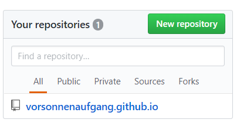
按照图示打开复制地址：
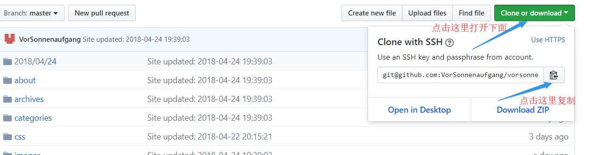
打开刚刚创建好的Hexo文件夹，用文本编辑器（如记事本）打开_config.yml：
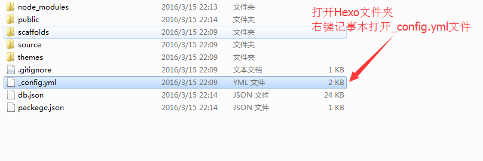
然后找到如图所示位置，进行修改并保存。
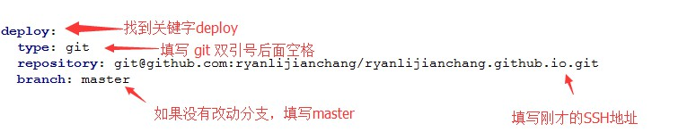
接下来在Hexo文件夹下执行：
hexo g
hexo d注意： hexo g可以代替hexo generate，hexo d可以代替hexo deploy，或者直径合并执行，hexo d -g。
如果报错ERROR Deployer not found: git，说明之前deployer没有成功安装，那么我们在执行一次npm install hexo-deployer-git --save,然后执行刚刚的语句，应该就成功了。
执行完之后会被要求输入GitHub账号密码，输入完后，我们的博客就已经成功部署到GitHub Pages的服务器上了，我们可以尝试访问下，在浏览器输入GitHub用户名.github.io，就可以进入到自己的博客页面了，例如我的博客页面就是：https://vorsonnenaufgang.github.io/ ，这样一来，别人也可以通过这个地址访问你的博客，到此为止，我们的整个博客搭建过程就完成了。
是的，我并没有花上一周的时间来搭建博客，反而是在一个小时不到的时间里成功地完成了博客搭建，我以为我终于达到了自己目标，可当我打开写教程的大神的博客时我发现和我现在看到的自己的博客怎么差别这么大！于是又开始折腾的不归路。。。